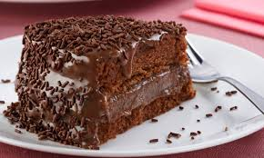

Bolo de Brigadeiro

- 2 xícaras (chá) de açúcar
- 4 unidades de ovos (claras e gemas separadas)
- 1 xícara (chá) de leite
- 1 colher (sopa) de fermento
- 200 gramas de granulado de chocolate
- 2 xícaras (chá) de farinha
- 1 lata de leite condensado
- 2 colheres (sopa) de margarina
- 1 xícara (chá) de chocolate em pó
Massa:
- Bata as claras em neve
- Misture as gemas e acrescente o açucar
- Comece acrescentar lentamente acrescente o leite, depois a farinha, meia xícara de chocolate em pó e então o fermento
- Despeje numa forma untada e leve ao forno médio-alto (200 ºC), preaquecido, por ~40 minutos
Recheio e cobertura:
- Em uma panela, misture o leite condensado, a manteiga e meia xícara de chocolate em pó
- Leve ao fogo médio, sempre mexendo, por 6 minutos ou até ficar mole
- Recheie o bolo com metade do brigadeiro e cubra-o com o restante